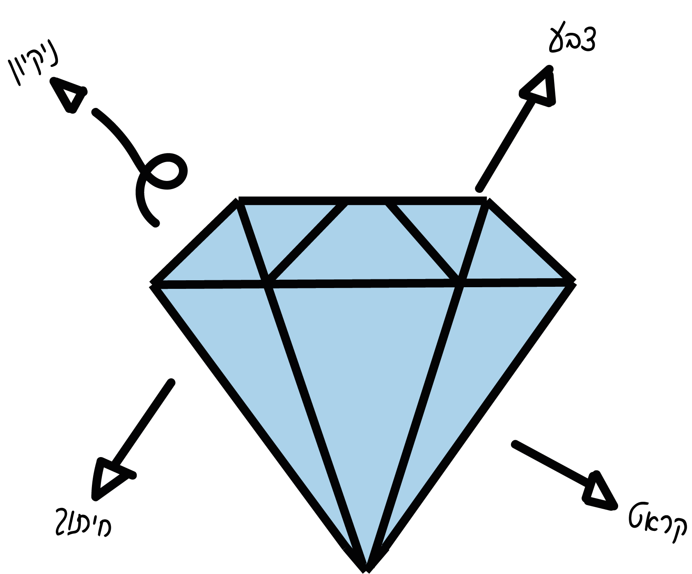
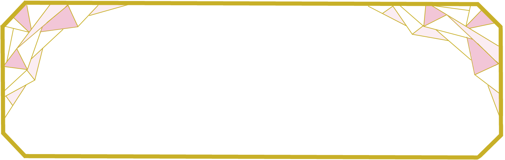
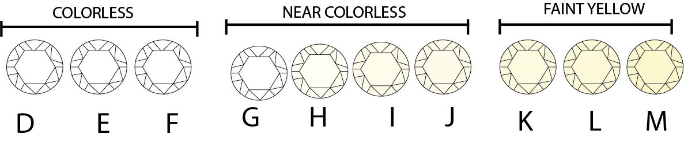
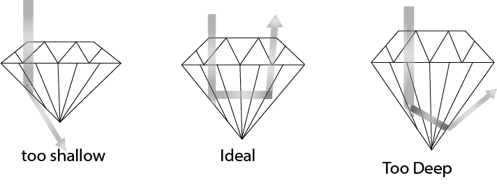
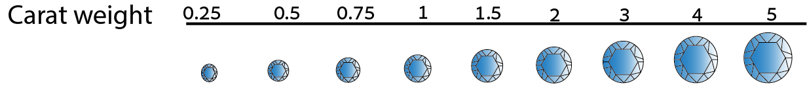
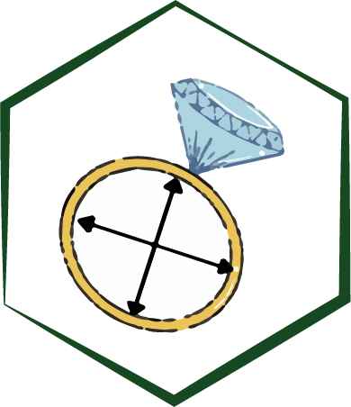
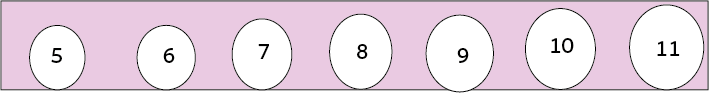

טבעות אירוסין


שלב ראשון: תקציב
לפני שמתחילים לחפש, חשוב לדעת מהו התקציב. מומלץ לומר לצורף מהו טווח המחירים שלך כדי שיוכל להציע לך טבעת בהתאם.
תקציב נמוך - עד 4,500₪
ניתן לרכוש את הטבעת דרך סוחרים באופן ישיר וללא תיווך החנויות וכך לצמצם את עלויות הטבעת.תקציב בינוני - עד 7,000₪
בכדי לשדרג את הטבעת, ניתן להוסיף שיבוץ יהלומים מסביב לאבן בכדי להבליט ולהגדיל אותה.תקציב גבוה - 7,500₪ ומעלה
מומלץ לרכוש טבעת בעלת יהלום כמה שיותר איכותי מבלי להתפשר על האיכות (יהלום עם תעודת GIA).
שלב שני: יהלום
אז עכשיו כשנסגרנו על תקציב, השלב הבא הוא לבחור את המוקד המרכזי של הטבעת, היהלום. בקניית היהלום יש לשים לב לארבעה קריטריונים:


ניקיון
ישנן חמש רמות של בהירות המקובלות בתעשיית היהלומים:
- IF - מייצג יהלום ללא פגם פנימי, יהלומים מסוג זה הם נדירים ביותר ולכן הם היקרים ביותר.
- VVS1, VVS2 - יהלום עם תכלילים זעירים אשר קשה לזהות ללא הגדלה.
- VS1-VS2 - יהלום בעל תכליל קטן מאוד, ניתן לראותם בקושי בהגדלהVS1-VS2.
- SI1-SI3 - הכללה קטנה, ניתן לראות בקלות רבה באמצעות הגדלה.
- I1-3 - תכלילים גדולים שניתן לראות בהגדלה ובעין האנושית.
צבע
בעולם היהלומים היהלום הכי טוב ידורג ברמה D כלומר, שאין לו צבע, ולכן הוא בעל ערך רב כיוון שאחוז יהלומים אלה בייצור העולמי הוא נמוך מאוד. דירוג הצבע יורד לפי סדר האלפבית מהאות D ועד M, מחוסר צבע עד צבע צהוב או חום בהיר.

חיתוך
חיתוך היהלום משפיע על הזוהר והברק שלו. אם חיתוך היהלום ייעשה בצורה איכותית, היהלום ייראה זוהר ומרשים יותר בניגוד ליהלום באיכות חיתוך נמוכה שייראה אטום.תרשים זה ממחיש עד כמה חיוני חיתוך מושלם, משום שהוא מאפשר לאור לחדור דרך הלוח של האבן (החלק השטוח העליון של היהלום) ולהמשיך בשבירת האור החוזר דרך הלוח.

קראט
קראט היא יחידת משקל בה מודדים יהלומים. ככל שהיהלום גדול יותר, כך יעלה ערכו.
מידת המשקל היא: 1 קראט = 0.2 גרם. טבעת יהלום של 1 קראט עם אבן בודדה תהיה יקרה יותר מאשר טבעת המכילה את אותו משקל רק באבנים קטנות יותר.

שלב שלישי: מידה
מומלץ לקחת טבעת שלה שהיא לא עונדת באופן יומיומי ולא תשים לב להיעדרה ולהביא אותה אל הצורף. ניתן גם להיעזר במדריך הקצר למציאת מידה.
 